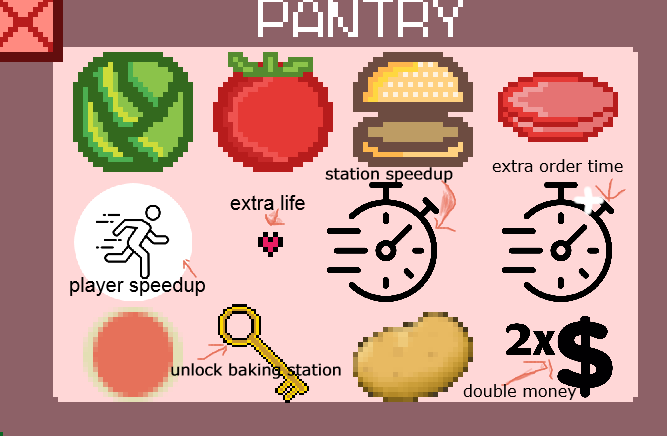

How to play?
We have tried to make the game as intuitive as possible however that doesn't always get through to the player so we have created a little play guide to help
Movement
To move the only input required is the mouse, point it to which station/place you want the player to go to, click, and if the station is free the player will move to that place
Changing characters
To switch your currently selected character press the number corresponding to the character you want to change to. There is 3 possible characters however you will start with just 2, so the only numbers you need to press are 1/2 however when you unlock the third chef you will be able to press 3 to switch to her.
Changing settings
To change the settings click the settings cog located on the menu screen in the top right corner. This will let you change the difficulty, mute the music, set customers to serve in the scenario mode. Once filling in your options click submit to save your config.
Loading from a file
If you want to load from a file then click the little floppy disk in the top left of the main menu screen, it will show you a file explorer, navigate to your save file (.json) and open it
Starting a new game
Once youve decided if youre loading from a file, changed the settings, you are ready to start playing. Simply click the play button for scenario mode, or endless button if you want it to go on until you run out of lives.
How to play
When you spawn in you will see your two chefs, and at the top will be an order, move one of your characters to the fridge, click on the items you need to add them to your cook. Then prepare them as appropriate. Veg needs cutting, Patties need frying, Pizzabases and potatos need baking
Burning?
If your items are left to fry/bake for more than ten seconds total your ingredient will be burnt and will not be servable to the customer.
How to serve
Move the cook with the prepared ingredients to the station where the customer is, click it and click the item you need to serve, if the receipt dissapears congrats, you served an order. If it didnt you did something wrong :/
How to unlock baking
To unlock the baking you need 100$ money, once you have this you can go to the fridge and click the key, once you do this you will be able to pick up pizza bases and potatos, and the customers will automatically realise those are now on the menu :p
How to win
In scenario to win you must serve your configured number of customers, default is 5
How to lose
If you don't serve 3 orders in time then you will run out of lives.
Powerups
This game has 5 powerups
- Speed - the cooks speed will be doubled temporarily ($100)
- Rep - you will get +1 health ($300)
- Station speedup - You will cook things faster ($300)
- Extra time - you will get +10 seconds on all current orders and future orders ($100)
- Double money - you will earn double money ($300)
Annotated diagram
Unlock third chef
To unlock the third chef click the little chef hat on the top of the play screen ($100)
Save game
To save the current game (money, powerups, rep) click the little save on the side of your play screen and it will save the current state as a json file in the current directory.